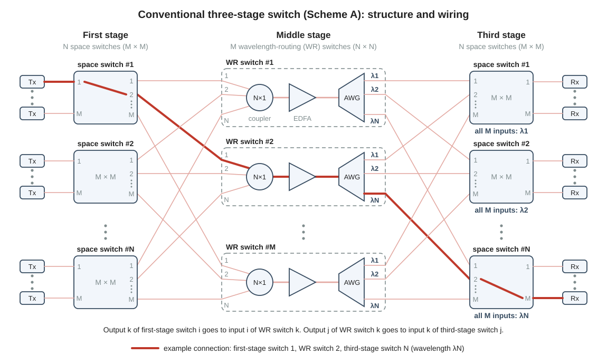
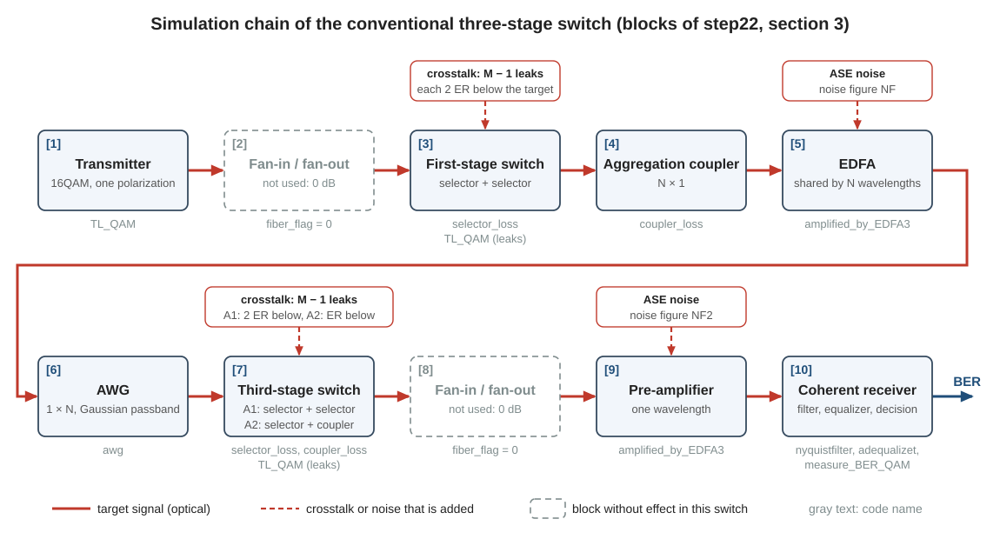
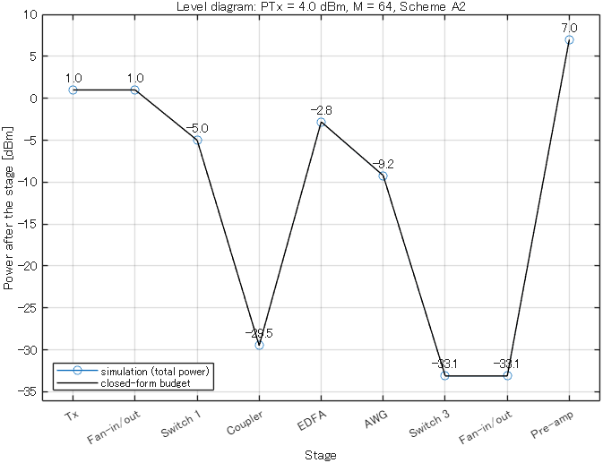
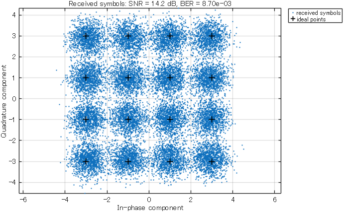
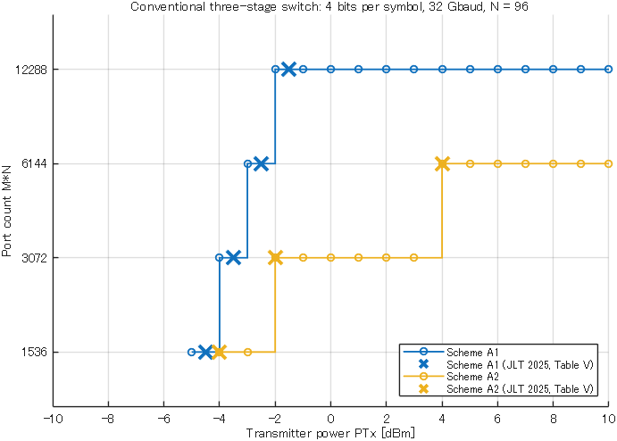

Research
22Conventional three-stage switch
The conventional three-stage switch is the second of the two given switches of this project, and it is the switch that your own work will modify. This page explains how the switch is wired, which wavelength a connection uses, how the two given scripts simulate it, and how closely the simulation reproduces the published result. It also shows the weak point that the proposal addresses: every leak inside a third-stage switch has the wavelength of the signal that it disturbs.
matlab/main/step22_three_stage_one_point.m, matlab/main/main_three_stage_conventional.mLibrary: TL_QAM, selector_loss, coupler_loss, amplified_by_EDFA3, awg, nyquistfilter, adequalizet, measure_BER_QAM, plot_level_diagram1. Why three stages, and which scheme
The two-stage switch of page 21 has \(MN\) ports. \(N\) is the number of wavelength channels, and it cannot grow much beyond 100. \(M\) is the size of the space switches, and in the two-stage switch it is limited by loss: the space switch lies before the optical amplifier and costs 4 dB each time \(M\) doubles. The JLT paper (see the box below) allows a transmitter power of at most 5 dBm and reports that no two-stage switch for a 200-Gbit/s signal then has more than 1000 ports (page 11).
The three-stage switch adds a third stage. It is a Clos network with \(N\) switches in the first stage, \(M\) switches in the middle stage and \(N\) switches in the third stage (page 11). Each stage can consist of space switches or of wavelength-routing (WR) switches. A space switch connects each of its inputs to any of its outputs, whatever the wavelength of the signal is. In a WR switch the wavelength of a signal decides the output port. The JLT paper examines the eight possible combinations and calls them Schemes A to H.
The paper first compares the schemes by the time that a rearrangement needs. The network is rearrangeably non-blocking: to admit a new connection, an existing connection sometimes has to move to another middle-stage switch. This move is a rearrangement (page 11). In Scheme A, the order space / WR / space, a rearrangement switches selectors in the first stage and in the third stage and nothing in the middle stage (Table II of the paper). A selector is the \(1 \times M\) switch from which a space switch is built, and it switches in less than 10 µs. Schemes that must change the wavelength of a laser for a rearrangement need more than 100 µs. The paper therefore continues with the schemes that need selectors only (A, C and G), and for each of the four port counts of its Table V it finds a version of Scheme A reasonable. Scheme A is the conventional three-stage switch of this project.
The architecture, the two versions of the third stage, the simulation conditions and the reference result of this page come from one paper. This page calls it the JLT paper.
- Mitsuya et al., "Three-Stage Optical Circuit Switch Architectures for Intra-Datacenter Networking," J. Lightw. Technol., vol. 43, no. 2, pp. 400-407, 2025 (doi 10.1109/JLT.2024.3465208)
2. Structure and wiring
Table 1 lists the three stages, and Fig. 1 shows how they are connected.
| Stage | Switch | Number | Size | Made of |
|---|---|---|---|---|
| First stage | space switch | \(N\) | \(M \times M\) | \(1 \times M\) selectors at the inputs, \(M \times 1\) selectors at the outputs |
| Middle stage | WR switch | \(M\) | \(N \times N\) | \(N \times 1\) aggregation coupler, EDFA, \(1 \times N\) AWG |
| Third stage | space switch | \(N\) | \(M \times M\) | \(1 \times M\) selectors at the inputs, \(M \times 1\) selectors or couplers at the outputs |
The third stage exists in two versions, with selectors or with couplers at the outputs (section 4). Every first-stage switch has \(M\) transmitters at its inputs, and every third-stage switch has \(M\) receivers at its outputs. The switch therefore has \(MN\) ports. In the scripts \(N\) is N = 96 and \(M\) is sw_size. The sizes \(M\) = 16, 32, 64 and 128 give 1536, 3072, 6144 and 12288 ports.
A WR switch has three parts (page 17). The aggregation coupler is a passive element that adds the light of its \(N\) inputs into one fiber. The EDFA (erbium-doped fiber amplifier) is the optical amplifier that restores the power (page 15). The AWG (arrayed-waveguide grating) separates the wavelength channels: its output \(j\) passes only wavelength channel \(j\). A wavelength channel is one of the \(N\) laser frequencies of the switch; neighboring channels are 50 GHz apart.
Between two stages, every switch has exactly one fiber to every switch of the next stage:
- First-stage switch \(i\): its output \(k\) goes to WR switch \(k\), where it is input \(i\).
- WR switch \(k\): its output \(j\) goes to third-stage switch \(j\), where it is input \(k\).
Here \(i\) and \(j\) run from 1 to \(N\), and \(k\) runs from 1 to \(M\).

How a connection is set up
A connection joins one transmitter to one receiver. Take a transmitter at first-stage switch \(i\), input \(a\), and a receiver at third-stage switch \(j\), output \(b\). The controller of the switch first chooses the WR switch that the connection will pass, WR switch \(k\). This WR switch must have two free fibers: the fiber from first-stage switch \(i\) and the fiber to third-stage switch \(j\). Every fiber between two stages carries one signal at a time. Three settings then make the connection:
- First-stage switch \(i\) connects its input \(a\) to its output \(k\).
- The laser of the transmitter is tuned to wavelength channel \(j\). In WR switch \(k\) the signal passes the aggregation coupler and the EDFA together with the signals from the other first-stage switches, which are on other channels. The AWG then sends it to output \(j\).
- Third-stage switch \(j\) connects its input \(k\) to its output \(b\).
The WR switch itself has nothing to set. The thick line of Fig. 1 is the connection with \(i = 1\), \(a = 1\), \(k = 2\), \(j = N\) and \(b = M\). The first transmitter of first-stage switch 1 sends on channel \(N\). The switch passes the signal to its output 2, and the fiber leads to input 1 of WR switch 2. The AWG sends the signal to its output \(N\), and the fiber leads to input 2 of third-stage switch \(N\). This switch passes the signal to its output \(M\), where the receiver is.
3. The wavelength rule and its weak point
In step 2 the transmitter had no choice of wavelength. Output \(j\) of an AWG passes only channel \(j\), and output \(j\) of every WR switch is wired to third-stage switch \(j\). Take a connection that goes from first-stage switch \(i\) through WR switch \(k\) to third-stage switch \(j\), and let \(c\) be the number of its wavelength channel. Then
The wavelength of a connection is the number of its third-stage switch. It depends neither on the first-stage switch nor on the WR switch. This is the wavelength rule of the conventional switch.
In the code. The library function awg_channel(in_port, out_port, N) returns the channel that an AWG passes from one input port to one output port (page 17). The AWG of the conventional switch has a single input port, and awg_channel(1, j, N) returns j. The two scripts of this page do not call the function, because they simulate one channel only. You will need it in matlab/work/work1_wavelength_rule.m.
The rule has three consequences.
- A rearrangement never changes a wavelength. \(c\) does not depend on \(k\). When a connection moves to another WR switch, the first-stage switch and the third-stage switch change their settings, and the laser keeps its wavelength. This is why Scheme A needs selectors only (section 1).
- A receiver always receives the same wavelength. Third-stage switch \(j\) has \(M\) receivers, and all of them receive channel \(j\). The JLT paper notes that the coherent receivers of this scheme only need to handle one frequency.
- All signals that meet in a third-stage switch have the same wavelength. Third-stage switch \(j\) has \(M\) inputs. Input \(k\) comes from WR switch \(k\), from output \(j\) of its AWG. Every one of these \(M\) fibers carries channel \(j\).
Why the third consequence is a weak point
A selector does not switch off completely. A port that is switched off, an off port for short, still passes a small part of the light. The extinction ratio \(\mathrm{ER}\) says how much weaker this light is than the light at the selected port: 35 dB in the JLT paper (sel_ex_ratio = 35). Light that reaches an output through an off port is a leak, and the signal that you follow is the target signal (page 16).
Look at third-stage switch \(j\) while it passes the target signal from input \(k\) to output \(b\). Its other \(M-1\) inputs carry \(M-1\) other signals to other outputs, and a small part of each of them leaks to output \(b\). All these leaks are on channel \(j\), like the target signal. Their spectra lie on top of the spectrum of the target signal, so no filter in the receiver can remove them. Such leaks are in-band crosstalk, and they act like noise (page 16).
The first stage is different. The \(M\) inputs of a first-stage switch come from \(M\) transmitters, and by Eq. (1) their destinations set their wavelengths. Two of these signals have the same wavelength only if they go to the same third-stage switch. The AWG sends a leak on another channel to another output, away from the receiver of the target signal. For the first stage the scripts assume the worst case: all leaks are on the channel of the target signal. For the third stage this is not a worst case. It is true whenever the other inputs of the switch are in use.
In the conventional three-stage switch, third-stage switch \(j\) receives wavelength channel \(j\) at all its inputs, so every leak inside it is in band. The wiring rule that keeps the wavelength fixed during a rearrangement is the cause. Page 23 starts from this point: the proposal changes which wavelengths meet in a third-stage switch.
4. Scheme A1 and Scheme A2
A signal passes two space switches. The first-stage switch lies before the EDFA, where every dB of loss costs one dB of SNR (page 15). It has selectors on both sides, because a selector has little loss. The third-stage switch lies after the EDFA. The JLT paper states that its loss has little effect on the SNR, and it therefore considers two versions of the third-stage switch (page 16 shows the inside of both):
- Scheme A1: selector + selector, as in the first stage.
- Scheme A2: selector + coupler. An \(M \times 1\) coupler replaces the \(M \times 1\) selector at every output. A coupler is passive and needs no control, but it has more loss than a selector, and it cannot block a leak.
| Scheme A1 | Scheme A2 | |
|---|---|---|
| Third-stage switch | selector + selector | selector + coupler |
Value of stage3_coupler_flag | 0 | 1 |
| \(1 \times 2\) switch elements per port (Table IV of the JLT paper) | \(4(M-1)\) | \(3(M-1)\) |
| EDFAs per port (Table IV) | \(1/N\) | \(1/N\) |
| Loss of the third-stage switch [dB] | \(2 \times 0.5\,\lceil \log_2 M \rceil\) | \((0.5 + 3.5)\,\lceil \log_2 M \rceil\) |
| Off ports that a leak passes in the third-stage switch | 2 | 1 |
| One leak is weaker than the target signal by | \(2\,\mathrm{ER}\) = 70 dB | \(\mathrm{ER}\) = 35 dB |
The hardware count follows from the path of a signal. A \(1 \times M\) selector is a tree of \(M-1\) switch elements of size \(1 \times 2\). A signal passes four selectors in Scheme A1, two in each space switch, and three selectors in Scheme A2. Every WR switch has one EDFA: \(M\) EDFAs serve \(MN\) ports, which is \(1/N\) EDFA per port, about 0.01 for \(N = 96\).
The signal-to-crosstalk ratio (SXR) is the power of the target signal divided by the power of all leaks together. The \(M-1\) leaks of a space switch are independent signals, so their powers add (page 16). For the third-stage switch this gives
| \(M = 16\) | \(M = 32\) | \(M = 64\) | \(M = 128\) | |
|---|---|---|---|---|
| Ports, \(MN\) | 1536 | 3072 | 6144 | 12288 |
| Switch elements per port, Scheme A1 | 60 | 124 | 252 | 508 |
| Switch elements per port, Scheme A2 | 45 | 93 | 189 | 381 |
| Loss of the third-stage switch, Scheme A1 | 4 dB | 5 dB | 6 dB | 7 dB |
| Loss of the third-stage switch, Scheme A2 | 16 dB | 20 dB | 24 dB | 28 dB |
| SXR of the third-stage switch, Scheme A1 | 58.24 dB | 55.09 dB | 52.01 dB | 48.96 dB |
| SXR of the third-stage switch, Scheme A2 | 23.24 dB | 20.09 dB | 17.01 dB | 13.96 dB |
Table 3 shows what Scheme A2 gains and what it costs.
- Hardware. Scheme A2 saves \(M-1\) switch elements per port, a quarter of the elements of Scheme A1. At \(M = 64\) these are 63 elements per port, or 63 × 6144 = 387072 elements in the whole switch.
- Loss. At \(M = 64\) the third-stage switch of Scheme A2 costs 24 dB in place of 6 dB. This loss lies after the EDFA, but the receiver has an amplifier of its own, and section 6 shows that the extra 18 dB lower the SNR there.
- Crosstalk. The SXR of Scheme A2 is 35 dB lower. The signal of this page is 16QAM, and 16QAM needs an SNR of 13.90 dB at the FEC limit. The FEC limit is a bit error ratio (BER) of \(10^{-2}\): up to this BER the forward error correction (FEC) removes the errors, and the connection works (page 14). At \(M = 64\) the leaks alone limit the SNR to 17.0 dB. At \(M = 128\) they limit it to 13.96 dB, and nothing is left for the noise of the amplifiers. A higher transmitter power does not change the SXR, because it raises the target signal and the leaks by the same amount.
5. The simulation model, block by block
step22_three_stage_one_point sends one target signal along the path of Fig. 1 and counts its bit errors. One run is one operating point: one transmitter power, one size of the space switches and one type of the third stage. Three lines in section 1 of the script set it:
PTx = 4; % transmitter power of one channel, both polarizations together [dBm]
sw_size = 64; % size M of the M x M space switches (64*96 = 6144 ports)
stage3_coupler_flag = 1; % stage 3: 0 = selectors (Scheme A1), 1 = couplers (Scheme A2)\(P_{\mathrm{Tx}}\) (PTx) is the power of one wavelength channel at the transmitter, both polarizations together. The default operating point is the largest Scheme A2 switch that Table V of the JLT paper lists as feasible: 6144 ports at 4 dBm.
The signal passes ten blocks (Fig. 2). The numbers [1] to [10] are the block numbers in section 3 of the script, and step21_two_stage_one_point uses the same numbers (page 21).

step22_three_stage_one_point. Solid arrows: the target signal. Dashed arrows: what a block adds to it. Dashed boxes: blocks that have no effect in this switch. The gray names are the library functions and parameters of the code.What the script simulates:
- The field is one polarization of one wavelength channel. The channel carries two signals, one in each polarization, and the simulated signal has half of the channel power:
pin = PTx - 3*pol_flag(page 14). - Other signals appear only as leaks, in blocks [3] and [7]. Each leak is a 16QAM signal with its own random data, made by a new call of
TL_QAM(page 16 shows the code lines). - The noise is the amplified spontaneous emission (ASE) of the two amplifiers, in blocks [5] and [9] (page 15).
- The neighboring wavelength channels, the fiber and the phase noise of the lasers are not simulated (header of the script).
| Block | Element | Loss or gain | What it adds | Functions |
|---|---|---|---|---|
| [1] | Transmitter: 16QAM at 32 GBd with a rectangular spectrum (page 13) | sets the power to pin = 1 dBm | nothing | rcosfilter, TL_QAM |
| [2] | Fan-in and fan-out of a multicore fiber (page 21) | not used: 0 dB | nothing | attenuation |
| [3] | First-stage switch, selector + selector | loss 6 dB | 63 leaks, each 70 dB below the target signal | selector_loss, TL_QAM, attenuation |
| [4] | Aggregation coupler, 96 × 1 | loss 24.5 dB | nothing | coupler_loss, attenuation |
| [5] | EDFA of the WR switch | gain; the signal plus the ASE inside 50 GHz is set to -2.82 dBm | ASE, noise figure 6 dB | amplified_by_EDFA3 |
| [6] | AWG, 1 × 96 | loss 6 dB, and 0.40 dB more from the shape of the passband | nothing: the AWG has one input port | awg |
| [7] | Third-stage switch | loss 24 dB (Scheme A1: 6 dB) | 63 leaks, each 35 dB below the target signal (Scheme A1: 70 dB) | selector_loss, coupler_loss, nyquistfilter, apply_filter, TL_QAM, attenuation |
| [8] | Fan-in and fan-out again | not used: 0 dB | nothing | attenuation |
| [9] | Pre-amplifier: a second EDFA directly in front of the receiver | gain; the signal plus the ASE inside 50 GHz is set to 7 dBm | ASE, noise figure 4 dB | amplified_by_EDFA3 |
| [10] | Coherent receiver (page 14) | rectangular filter as wide as the signal, equalizer, decision, bit-error count | nothing | nyquistfilter, apply_filter, adequalizet, measure_BER_QAM |
Table 5 lists the parameters of section 1 of the script and the source of their values. The comments of the script mark the source: "paper" is section IV of the JLT paper, and "lab" is a value of the laboratory code that the paper does not give.
| Parameter | Meaning | Block | Source |
|---|---|---|---|
mod_flag = 4, baudrate = 32e9, pol_flag = 1 | 16QAM, 32 GBd, two polarizations: the 200-Gbit/s signal of the paper | [1] | paper |
fiber_flag = 0 | single-core fiber: no fan-in and no fan-out | [2], [8] | paper |
sel_ex_ratio = 35 | extinction ratio of one selector [dB] | [3], [7] | paper |
N = 96 | number of wavelength channels, on the 50-GHz grid | [4], [5] | paper |
signal_interval = 50e9 | channel spacing [Hz]; the output limit of both amplifiers counts the ASE inside this bandwidth | [5], [9] | paper |
edfa_sat1 = 20, NF = 6 | saturation output power [dBm] and noise figure [dB] of the EDFA | [5] | paper |
AWG_loss = 6 | loss of the AWG at the center of its passband [dB] | [6] | paper |
FWHM_AWG = 50e9, AWG_XT = 32 | 3-dB width [Hz] and floor [dB] of the Gaussian passband of the AWG | [6] | lab |
edfa_sat2 = 10, NF2 = 4 | saturation output power [dBm] and noise figure [dB] of the pre-amplifier | [9] | lab |
BER_limit = 1e-2 | FEC limit | [10] | no mark; the paper uses the same limit |
up = 2, rolloff = 0, Morder = 16, datasize = 3e4, seed = 1, xt_wave_max = Inf | settings of the simulation: oversampling rate (the number of samples per symbol), roll-off factor, order of the equalizer, number of symbols, seed of the random numbers, leak waveforms per switch | [1]-[10] | no mark |
The loss rules are those of the paper too: 0.5 dB per stage of a selector, 3.5 dB per stage of a coupler and 24.5 dB for the aggregation coupler. They are inside selector_loss and coupler_loss. Two things are not in the paper. First, the shape of the AWG passband: the script uses a Gaussian curve with a 3-dB width of 50 GHz, centered on the signal. The curve reaches its floor AWG_XT only outside the simulated band, so the floor has no effect here. Second, the receiver: the paper does not describe the receiver of its simulation, and block [10] is the ideal receiver of page 14.
The power after every block
The script stores the power after block [k] in stage_power(k). It prints these values next to a closed-form budget: the same powers calculated with formulas, without random numbers (sections 5 and 7 of the script). With the default parameters the script prints:
Operating point : PTx = 4.0 dBm, space switches 64 x 64, Scheme A2
Switch size : 6144 x 6144 ports (M*N = 64*96)
BER : 8.700e-03 (696 errors in 80000 bits), FEC limit 1e-02
Power after every block [dBm] (one polarization, inside the band Fs)
block simulation budget budget
(total) (total) (target)
[1] Tx 1.000 1.000 1.000
[2] Fan-in/out 1.000 1.000 1.000
[3] Switch 1 -5.000 -5.000 -5.000
[4] Coupler -29.500 -29.500 -29.500
[5] EDFA -2.813 -2.809 -2.872
[6] AWG -9.221 -9.218 -9.268
[7] Switch 3 -33.141 -33.133 -33.268
[8] Fan-in/out -33.141 -33.133 -33.268
[9] Pre-amp 7.020 7.020 6.794
ASE of EDFA -21.233 -21.245
ASE of pre-amp -9.846 -9.810
sigpw (block [7]) -9.240 -9.236All powers are those of the simulated polarization inside the simulated band \(F_s\) = up*baudrate = 64 GHz. The column simulation (total) is measured with calc_signal_power and contains everything in the field: target signal, leaks and ASE. The column budget (target) is the target signal alone. The last three rows are not blocks. They give the ASE power at the output of each amplifier and sigpw, the power inside the signal band after the AWG. The script measures sigpw through Hband, a rectangular mask that is as wide as the signal band. Block [7] uses sigpw as the power of one signal at an input of the third-stage switch, before the off ports weaken it. In the printed tables, Switch 1 and Switch 3 are the first-stage and the third-stage switch. You can calculate the rows by hand (page 12):
- [1] 4 - 3 = 1 dBm.
- [3] The signal passes two selectors with six stages each: 2 × 0.5 × 6 = 6 dB. The power is -5 dBm.
- [4] The aggregation coupler costs 24.5 dB. The power at the EDFA input is -29.5 dBm, and the loss before the EDFA is 6 + 24.5 = 30.5 dB.
- [5] The saturation output power fixes the output of the EDFA. 96 channels and two polarizations share 20 dBm: 20 - 19.82 - 3 = -2.82 dBm (page 15). This is the output limit. It holds for the signal plus the ASE inside one channel spacing, 50 GHz (
signal_interval). The target signal alone has -2.87 dBm. The printed total is -2.81 dBm, a little above the limit, because the simulated band of 64 GHz holds more ASE than 50 GHz. - [6] The AWG removes 6 dB, and its Gaussian passband removes 0.40 dB more at the edges of the signal spectrum: -9.27 dBm for the target signal.
- [7] The third-stage switch of Scheme A2 costs 3 + 21 = 24 dB: -33.27 dBm for the target signal. The total is 0.13 dB higher, because it also contains the 63 leaks and the ASE of the EDFA.
- [9] The output limit of the pre-amplifier follows from the same rule: 10 - 3 = 7 dBm. The printed total is 7.02 dBm, because it contains the ASE of the whole simulated band.
The power is low at two places: at the EDFA input and at the input of the pre-amplifier. In Scheme A2 the second place is the lower one, -33.1 dBm against -29.5 dBm. Figure 3 in section 7 shows this table as a level diagram, the plot of the power after every block (page 12).
6. The noise and crosstalk budget
Four disturbances reach the receiver together with the target signal: the ASE of the EDFA, the leaks of the first-stage switch, the leaks of the third-stage switch and the ASE of the pre-amplifier. They are independent of each other, so their powers add. Divide each power by the power of the target signal, both inside the bandwidth of the signal. The sum of the four ratios is the inverse of the SNR:
The ratios in Eq. (3) are linear numbers, not values in dB. Section 6 of the script calls the four terms nsr_ase1, nsr_xt_sw1, nsr_xt_sw3 and nsr_ase2. In dB, every ratio follows from a rule of an earlier page:
\(P_{\mathrm{EDFA,in}}\) and \(P_{\mathrm{pre,in}}\) are the powers of the channel at the inputs of the two amplifiers in dBm, both polarizations together. The constant 53.87 belongs to the symbol rate of 32 GBd, and \(\mathrm{NF}\) and \(\mathrm{NF}_2\) are the noise figures NF and NF2 in dB (page 15). The line for \(\mathrm{SXR}_{3}\) is Eq. (2): \(n\) is the number of off ports that a leak passes in the third-stage switch.
The script evaluates the four terms with the complete formulas of its section 6 and prints them in dB. After the power table of section 5 it prints:
SNR contributions in the signal bandwidth [dB]
ASE of the EDFA 21.38
crosstalk of the stage-1 switch 52.01
crosstalk of the stage-3 switch 16.94
ASE of the pre-amplifier 19.58
all together (budget) 14.15
simulation 14.19
(noise gain of the equalizer behind the AWG: 0.03 dB)
BER of Gaussian noise with the SNR of the budget: 8.494e-03
Self-check 1 passed: power after every block = budget within 0.1 dB (largest difference 0.008 dB)
Self-check 2 passed: simulated SNR = SNR budget within 0.7 dB (difference +0.05 dB)Check the lines by hand.
- ASE of the EDFA. The channel reaches the EDFA with 4 - 6 - 24.5 = -26.5 dBm, and -26.5 + 53.87 - 6 = 21.37 dB.
- Crosstalk of the stage-1 switch. 70 - 10 log10(63) = 70 - 17.99 = 52.01 dB.
- Crosstalk of the stage-3 switch. 35 - 17.99 = 17.01 dB. The script prints 0.07 dB less. It counts two small effects in addition: every leak brings the noise of its own path with it, and the equalizer raises the leaks slightly (page 16).
- ASE of the pre-amplifier. The target signal reaches the pre-amplifier with -33.27 dBm in one polarization (row [8] of the power table). The channel has -30.27 dBm, and -30.27 + 53.87 - 4 = 19.60 dB.
- All together. \(10^{-2.138} + 10^{-5.201} + 10^{-1.694} + 10^{-1.958} = 0.0385\), which is 14.14 dB. The script prints 14.15 dB, because it adds the four terms before it rounds them.
The hand values of the two amplifier lines differ from the printed lines by 0.01 dB and 0.02 dB. Two details of the script explain this. A factor of two in power is 3.01 dB, not 3 dB. And the equalizer raises a disturbance that is added after the AWG by 0.03 dB: this is the printed line noise gain of the equalizer behind the AWG.
The line simulation is the SNR that the script measures from the received symbols (section 4 of the script). Self-check 2 compares it with the budget, and self-check 1 compares the simulated powers with the power budget. The line BER of Gaussian noise with the SNR of the budget is the BER that the formula of page 14 gives for 14.15 dB. The simulated BER is expected a few percent above it (comment in section 6 of the script): here 8.700e-03 against 8.494e-03. For the same reason the receiver of the simulation needs about 14.0 dB for a BER of \(10^{-2}\), a little more than the 13.90 dB of the formula (header of main_three_stage_conventional, and page 14). The default operating point has 14.19 dB: its BER of 8.700e-03 is just below the limit.
Now set stage3_coupler_flag = 0 (Scheme A1) and run the script again. The BER line reads 0.000e+00 (0 errors in 80000 bits), and the SNR table becomes:
SNR contributions in the signal bandwidth [dB]
ASE of the EDFA 21.38
crosstalk of the stage-1 switch 52.01
crosstalk of the stage-3 switch 51.94
ASE of the pre-amplifier 37.59
all together (budget) 21.27
simulation 21.32
(noise gain of the equalizer behind the AWG: 0.03 dB)
BER of Gaussian noise with the SNR of the budget: 8.394e-08Two lines have changed. The leaks of the third stage are now 70 dB below the target signal, and the pre-amplifier receives 18 dB more power. Both terms are now far above the 21.38 dB of the EDFA, and the total is almost the SNR of the EDFA alone.
Which term limits which scheme
Table 6 collects the SNR table of the script for every size of the space switches. Each row is one run at the required transmitter power of that size, that is, the lowest power of the quick search of section 8 that meets the FEC limit.
| Scheme | \(M\) | \(P_{\mathrm{Tx}}\) [dBm] | \(\mathrm{SNR}_{\mathrm{EDFA}}\) | \(\mathrm{SXR}_{1}\) | \(\mathrm{SXR}_{3}\) | \(\mathrm{SNR}_{\mathrm{pre}}\) | \(\mathrm{SNR}\) | BER |
|---|---|---|---|---|---|---|---|---|
| A1 | 16 | -5 | 14.38 | 58.24 | 58.05 | 39.41 | 14.37 | 7.763e-03 |
| A1 | 32 | -4 | 14.38 | 55.09 | 54.90 | 38.40 | 14.36 | 7.275e-03 |
| A1 | 64 | -3 | 14.38 | 52.01 | 51.82 | 37.40 | 14.36 | 7.387e-03 |
| A1 | 128 | -2 | 14.38 | 48.96 | 48.78 | 36.40 | 14.35 | 7.763e-03 |
| A2 | 16 | -4 | 15.38 | 58.24 | 23.08 | 27.44 | 14.48 | 7.038e-03 |
| A2 | 32 | -2 | 16.38 | 55.09 | 19.96 | 23.48 | 14.25 | 8.488e-03 |
| A2 | 64 | 4 | 21.38 | 52.01 | 16.94 | 19.58 | 14.15 | 8.700e-03 |
| A2 | 128 | 10 | 26.39 | 48.96 | 13.92 | 15.62 | 11.53 | 3.644e-02 |
- Scheme A1 has one limit: the ASE of the EDFA. At every required power this term is 14.38 dB, and the three other terms are more than 20 dB higher. Each time \(M\) doubles, the two selectors of the first-stage switch add 2 × 0.5 = 1 dB before the EDFA, and 1 dB more transmitter power compensates for it.
- Scheme A2 has three limits. At \(M = 16\) the EDFA still gives the lowest term. Each time \(M\) doubles, the crosstalk term of the third stage falls by about 3 dB (twice as many leaks), and the term of the pre-amplifier falls by about 4 dB (one more stage in the third-stage switch). At \(M = 64\) both are below the term of the EDFA.
- Two of the three limits do not react to the transmitter power. The SXR does not contain the power (Eq. (2)). The input power of the pre-amplifier does not follow the transmitter power either, because the saturation output power fixes the output of the EDFA. At \(M = 64\) these two terms together give 15.06 dB, only 1 dB above the 14.0 dB that the receiver needs. By Eq. (3) the EDFA term must then be about 20.7 dB (\(10^{-1.400} - 10^{-1.506} = 0.0086\)), and by Eq. (4) this needs about 3.3 dBm of transmitter power. This is why the required power of Scheme A2 rises by about 6 dB from \(M = 32\) to \(M = 64\). At \(M = 128\) the two terms together give 11.68 dB. No transmitter power can reach 14.0 dB.
In Scheme A1 the power at the EDFA input decides everything, and 1 dB more transmitter power allows a switch of twice the size. In Scheme A2 the in-band crosstalk of the third stage and the noise of the pre-amplifier set an upper limit for the SNR that no transmitter power can raise. At \(M = 128\) this upper limit is below what 16QAM needs.
7. Run the two scripts
In MATLAB, make the folder matlab the current folder and run setup_path (once per MATLAB session). Run both scripts as whole files: press F5 in the editor or type the name of the script. Do not run single sections.
- Run
step22_three_stage_one_point. It needs a few seconds. Compare the printed tables with sections 5 and 6 of this page. Every printed digit should agree, because the script fixes the random numbers (seed = 1). Both self-checks must printpassed. The script opens two figures (Fig. 3 and Fig. 4). - Change one parameter of the operating point, predict how the two tables change, and run again (the task box below).
- Run
main_three_stage_conventional. Its first parameter isquick_flag = 1, a quick run of less than one minute. It prints the search and a summary, opens Fig. 5 and writes four files intomatlab/results(section 8). - When the quick run works, set
quick_flag = 0for the full size and run it once more. This run needs a few minutes.

step22_three_stage_one_point: the level diagram of the default operating point. Markers: the simulated total power after every block. Black line: the closed-form budget. The two low points are the EDFA input (-29.5 dBm) and the input of the pre-amplifier (-33.1 dBm).
step22_three_stage_one_point: the received symbols after the equalizer and the 16 ideal points. The title of the figure gives the simulated SNR and the BER. At 14.2 dB neighboring clouds touch: the operating point is close to the FEC limit.- Your two tables agree with the tables of sections 5 and 6, both self-checks print
passed, and your figures look like Fig. 3 and Fig. 4. - You can calculate the rows [1], [3] and [4] of the power table by hand, and you can explain why the rows [5] and [9] are close to -2.82 dBm and 7 dBm.
- You can calculate the four lines of the SNR table by hand, with the power table for the input of the pre-amplifier.
- You can say which term limits Scheme A1 and which terms limit Scheme A2.
Change the lines of section 1 of step22_three_stage_one_point as stated. Write down your prediction of the SNR table first, then run the script and compare. Set the values back before the next experiment.
PTx = 0(Scheme A2, \(M = 64\)). Which lines of the SNR table change, and by how much?sw_size = 128andPTx = 10(Scheme A2). Is the BER below the FEC limit? Which lines explain the result?stage3_coupler_flag = 0,sw_size = 128andPTx = -2(Scheme A1). Predict the lineASE of the EDFA. Then tryPTx = -3.
What you should see
1. The line of the EDFA falls by 4 dB to 17.38 dB. The other lines hardly change: 52.01, 16.90 and 19.51 dB. The budget gives 13.02 dB, the simulation 13.07 dB, and the BER is 1.723e-02, above the limit.
2. No. The EDFA line rises to 26.39 dB, but the crosstalk of the stage-3 switch is 13.92 dB and the ASE of the pre-amplifier is 15.62 dB. The budget gives 11.53 dB, and the BER is 3.644e-02. This is the last row of Table 6.
3. The channel reaches the EDFA with -2 - 7 - 24.5 = -33.5 dBm, and Eq. (4) gives -33.5 + 53.87 - 6 = 14.37 dB. The script prints 14.38 dB and a BER of 7.763e-03. With PTx = -3 the SNR of the EDFA is 1 dB lower, and the BER is 1.456e-02, above the limit.
8. Port count and the published reference
main_three_stage_conventional repeats the chain of step22_three_stage_one_point for many operating points. It answers the question of Fig. 6 and Table V of the JLT paper: how many ports can the switch have at a given transmitter power, if the BER must stay at or below the FEC limit?
- Search. For both types of the third stage (
list_stage3_coupler_flag = [0 1]) and for every size (list_sw_size = [16 32 64 128]) the script looks for the lowest transmitter power of the listpin_arywith a BER of at mostBER_limit. This power isrequired_PTx. The namepin_arycomes from the earlier laboratory code; its values are \(P_{\mathrm{Tx}}\) values. - Port count. The port count at a power \(P\) is the largest \(MN\) whose required power is at most \(P\).
- Shortcut. The script visits the sizes from small to large. A larger switch never needs less power, so its search starts at the required power of the size before. Self-checks 1 and 2 of the script test this assumption with the simulated BER values.
- Same chain, same numbers. The lines between
% ---- chain begin ----and% ---- chain end ----are the chain ofstep22_three_stage_one_point, line by line, and the seed is set before every operating point. The step script therefore repeats any point of the search with the same BER. The rows of Table 6 were made in this way. - Two sizes of run.
quick_flag = 1: 30000 symbols per point and powers from -10 dBm to 10 dBm in steps of 1 dB.quick_flag = 0: 150000 symbols per point and steps of 0.5 dB. - Result files. Every run writes four new files into
matlab/results. Their names begin withthree_stage_conventional_and the date and time of the run. The.matfile holds all parameters, the seed and all results. The file_portcount.csvholds the port count for every power, the file_required_PTx.csvthe required powers, and the.pngfile the figure.
The quick run begins with these lines:
Search: 30000 symbols per point, 21 powers from -10.0 to 10.0 dBm
A1, M = 16, PTx = -10.0 dBm: BER = 7.585e-02
A1, M = 16, PTx = -9.0 dBm: BER = 5.597e-02
A1, M = 16, PTx = -8.0 dBm: BER = 3.925e-02
A1, M = 16, PTx = -7.0 dBm: BER = 2.515e-02
A1, M = 16, PTx = -6.0 dBm: BER = 1.457e-02
A1, M = 16, PTx = -5.0 dBm: BER = 7.763e-03
Scheme A1, M = 16 ( 1536 ports): required PTx = -5.0 dBm
A1, M = 32, PTx = -5.0 dBm: BER = 1.443e-02
A1, M = 32, PTx = -4.0 dBm: BER = 7.275e-03
Scheme A1, M = 32 ( 3072 ports): required PTx = -4.0 dBmThe search for \(M = 32\) starts at -5 dBm, where the search for \(M = 16\) ended. After the last operating point the script prints this summary. The time depends on the PC. NaN ("not a number") is the MATLAB value for a missing number. Here it marks a size that does not reach the FEC limit: up to 10 dBm in this run, and up to 5 dBm in the paper.
36 operating points in 11.0 s (0.31 s per point)
Required transmitter power [dBm] (NaN = not reached up to 10.0 dBm)
scheme M ports this run JLT 2025 difference
A1 16 1536 -5.0 -4.5 -0.5
A1 32 3072 -4.0 -3.5 -0.5
A1 64 6144 -3.0 -2.5 -0.5
A1 128 12288 -2.0 -1.5 -0.5
A2 16 1536 -4.0 -4.0 +0.0
A2 32 3072 -2.0 -2.0 +0.0
A2 64 6144 4.0 4.0 +0.0
A2 128 12288 NaN NaN NaN
(JLT 2025 = Table V of the paper; NaN there = infeasible, above 5 dBm)
Self-check 1 passed: a larger space switch has the higher BER at the same power (6 pairs of sizes)
Self-check 2 passed: the BER falls when the power rises (28 power steps)
Bookkeeping check passed: required power and port count fit together
main_three_stage_conventional with quick_flag = 1. Lines with circles: the port count of this run for Scheme A1 and Scheme A2. Crosses: Table V of the JLT paper, the lowest transmitter power at which the paper reaches each port count. Scheme A2 has no cross at 12288 ports, because the paper lists this switch as infeasible.Read a curve from left to right: at each step the transmitter power is high enough for the next size. The curve of Scheme A1 climbs one size per dB, and it reaches 12288 ports at -2 dBm. The curve of Scheme A2 needs 6 dB more for the step to 6144 ports and never reaches 12288 ports. This is the behavior that section 6 explained. For a transmitter power of 0 dBm the JLT paper reports 12288 ports for Scheme A1 and 3072 ports for Scheme A2, and the quick run gives the same two numbers.
How closely the model reproduces Table V
The reference values are in the file matlab/ref_data/jlt2025_three_stage_ref.csv. Table 7 compares them with the quick run and with the full-size run.
| Scheme | \(M\) | Ports | JLT paper | Quick run | Full-size run | Difference |
|---|---|---|---|---|---|---|
| A1 | 16 | 1536 | -4.5 | -5.0 | -5.0 | -0.5 |
| A1 | 32 | 3072 | -3.5 | -4.0 | -4.0 | -0.5 |
| A1 | 64 | 6144 | -2.5 | -3.0 | -3.0 | -0.5 |
| A1 | 128 | 12288 | -1.5 | -2.0 | -2.0 | -0.5 |
| A2 | 16 | 1536 | -4.0 | -4.0 | -4.5 | -0.5 |
| A2 | 32 | 3072 | -2.0 | -2.0 | -2.0 | 0.0 |
| A2 | 64 | 6144 | 4.0 | 4.0 | 3.5 | -0.5 |
| A2 | 128 | 12288 | infeasible (above 5 dBm) | not reached up to 10 dBm | not reached up to 10 dBm | - |
The model reproduces every entry of Table V within one step of a grid of 0.5 dB, and no parameter was tuned to get closer (header of the script). The full-size run needs 0.5 dB less power than the paper at six entries and the same power at one. At \(M = 128\) Scheme A2 fails in the model as in the paper.
The quick run agrees with the paper exactly for Scheme A2. This is an effect of its steps of 1 dB, not a better agreement: the quick run cannot find -4.5 dBm or 3.5 dBm. Use the full-size run when you compare numbers.
What is known about the difference, from the header of the script and from single operating points that were run again for this page:
- The paper does not give the receiver model, the noise figure of the pre-amplifier (here
NF2 = 4) and the width of the AWG passband (here 50 GHz). - Scheme A1 is limited by the ASE of the EDFA only, so
NF2andFWHM_AWGdo not change its numbers. Its difference is the same 0.5 dB at all four sizes. Both the paper and the model need 1 dB more power each time \(M\) doubles. - Scheme A2 at \(M = 64\) is very sensitive, because the crosstalk of the third stage alone limits the SNR to 17 dB. With
FWHM_AWG = 40e9the required power is 4.0 dBm. WithNF2 = 5the BER is 1.035e-02 at 4.5 dBm, still above the limit, and the required power is 5.0 dBm. WithNF2 = 6the BER is 1.018e-02 even at 8.5 dBm, and it falls below the limit only at 9.0 dBm (150000 symbols each). - The value 3.5 dBm of the full-size run rests on a small margin. The BER is 1.039e-02 at 3.0 dBm and 9.595e-03 at 3.5 dBm, 4 percent above and 4 percent below the limit, and it falls by only 7 percent per 0.5 dB. The random error of one BER value is about 1.5 percent here. Runs with
seed = 2andseed = 5and runs withup = 4andup = 8gave the same result: a BER above the limit at 3.0 dBm and below it at 3.5 dBm. One run withup = 8andxt_wave_max = 16together had a BER of 9.995e-03 at 3.0 dBm, just below the limit. At this size the model therefore needs less power than the 4.0 dBm of the paper: 0.5 dB less in all these runs but the last one, and 1 dB less in the last one.
Do not read a required power as an exact number. It is the first point of a grid at which a counted BER falls below the limit. Near the limit of Scheme A2 a change of 4 percent in the BER moves the result by one grid step. Report the grid and the number of symbols together with every required power.
- Your quick run prints the summary that is shown above, apart from the time, and your figure looks like Fig. 5.
- Your full-size run gives the column "Full-size run" of Table 7.
- You can explain why the curve of Scheme A1 climbs one size per dB and why the curve of Scheme A2 stops at 6144 ports.
9. Assumptions and limits of the model
The agreement with Table V does not make the model exact. These are its assumptions.
- One channel, one polarization. The 95 other wavelength channels are not simulated. Crosstalk from other wavelengths, the fiber and the phase noise of the lasers are left out.
- Full load and worst case. All \(M-1\) other inputs of a space switch carry a signal with the power of the target signal. In the first stage all of them are assumed to have the wavelength of the target signal. The EDFA output is shared by all 96 channels.
- Leaks are independent signals. Each leak is a 16QAM signal with its own data, and the powers of the leaks add. A \(1 \times M\) selector has the extinction ratio of 35 dB for every \(M\).
- Loss rules. A selector costs 0.5 dB and a coupler 3.5 dB per stage, with the number of stages rounded up. The 96 × 1 aggregation coupler costs 24.5 dB, like a 128 × 1 coupler (page 12).
- Amplifiers. The output power of an amplifier is fixed by its saturation output power, and the channels share it equally. The share of one channel holds its signal and the ASE inside one channel spacing of 50 GHz. The values of the pre-amplifier are lab values.
- AWG. The passband is a Gaussian curve of 50 GHz width, centered on the signal. This is a lab value. The AWG adds no crosstalk.
- Ideal receiver. The receive filter is an ideal rectangle, and the equalizer is trained with known symbols. No real filter is a perfect rectangle (page 14). The JLT paper does not describe the receiver of its simulation.
- Statistics. The quick settings compare 80000 bits per point: about 800 bit errors at the FEC limit, a random error of about 3.5 percent of the BER (page 14).
- Oversampling rate. The scripts use
up = 2, a simulated band of 64 GHz. This is enough here, because every signal of the chain is on the wavelength of the target signal. The SNR budget does not depend onup: the output limit of an amplifier counts the ASE inside 50 GHz, not the ASE inside the simulated band. At the default operating point the budget is 14.15 dB forup= 2, 4 and 8, and the BER is 8.700e-03, 8.800e-03 and 8.462e-03, equal within the random error. The total powers of the power table do change withup, because they contain the ASE of the whole simulated band. A signal on another wavelength channel needs a largerup(note onupin the script).
The header of main_three_stage_conventional names one option for speed. With xt_wave_max = 16 a space switch makes at most 16 leak waveforms, and their total power stays that of all \(M-1\) leaks. The header states that the full-size search then finds the same required powers and is about 2.5 times faster. A check for this page gave the same eight results as the full-size run of Table 7.
10. Check your understanding
- How much loss does a signal collect before the EDFA for \(M = 64\) and \(N = 96\)? Compare with a two-stage switch of the same size.
Answer
Two selectors with six stages and the aggregation coupler: 2 × 0.5 × 6 + 24.5 = 30.5 dB. The space switch of the two-stage switch has couplers at its outputs and costs 4 × 6 = 24 dB, so the total is 48.5 dB (page 11). The three-stage switch has 18 dB less loss before the EDFA. In MATLAB:
2*selector_loss(64) + coupler_loss(96). - A transmitter at first-stage switch 7 is connected to a receiver at third-stage switch 40 through WR switch 3. Which wavelength channel does it use, and which ports of the three switches does the signal pass? What changes when the connection is rearranged to WR switch 9?
Answer
By Eq. (1) the channel is 40. The signal leaves first-stage switch 7 at output 3, enters WR switch 3 at input 7, leaves it at output 40 and enters third-stage switch 40 at input 3. After the rearrangement it uses output 9 of first-stage switch 7, input 7 and output 40 of WR switch 9, and input 9 of third-stage switch 40. The channel is still 40: only selectors switch.
- At \(M = 64\), how many \(1 \times 2\) switch elements per port does Scheme A2 save? What are its two costs at this size?
Answer
252 - 189 = 63 elements per port (Table 3). The costs are 18 dB more loss in the third-stage switch (24 dB in place of 6 dB) and an SXR that is 35 dB lower (17.01 dB in place of 52.01 dB).
- Why is Scheme A2 infeasible at \(M = 128\), whatever the transmitter power is?
Answer
The third-stage switch has 127 in-band leaks, each 35 dB below the target signal: 35 - 10 log10(127) = 13.96 dB. This alone is not more than the 14.0 dB that the receiver needs. In addition the third-stage switch costs 28 dB, and the term of the pre-amplifier falls to 15.6 dB. Neither term depends on the transmitter power. Together they give 11.7 dB, and the script finds a BER of 3.6e-02 even at 10 dBm.
- Calculate the required transmitter power of Scheme A1 for \(M = 128\) from Eq. (4). Assume that only the ASE of the EDFA counts and that the receiver needs 14.0 dB.
Answer
The EDFA input must have 14.0 - 53.87 + 6 = -33.87 dBm. The loss before the EDFA is 7 + 24.5 = 31.5 dB, so \(P_{\mathrm{Tx}}\) = -33.87 + 31.5 = -2.37 dBm. The next power of the grid is -2.0 dBm, the value that both runs find (Table 7).
- At the default operating point, which amplifier adds more noise to the signal? Explain the difference of the two SNR lines with the two input powers and the two noise figures.
Answer
The pre-amplifier: 19.58 dB against 21.38 dB. The channel reaches the EDFA with -26.5 dBm and the pre-amplifier with -30.27 dBm, which is 3.77 dB less. The noise figure of the pre-amplifier is 2 dB lower, so 1.77 dB remain: 21.37 - 1.77 = 19.60 dB.
You now have two working baselines: the two-stage ULCF switch of page 21 and the conventional three-stage switch of this page. For both you can run one operating point, check its power and SNR tables by hand, and reproduce the port count of the earlier work. The conventional three-stage switch has two limits that come from its structure: the 24.5 dB of the aggregation coupler before the EDFA, and the in-band leaks of the third stage, which make the cheaper Scheme A2 fail above \(M = 64\). What is missing is a switch that addresses both. This is the proposal, and it is your work: page 23.